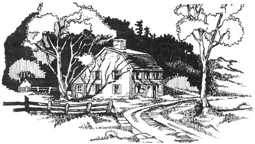

Back in the early 1940's - during a surge in do-it-yourself country living much like the groundswell we're now experiencing - some smarter-than-average people did just what their counterparts are doing today. That is, Ed and Carolyn Robinson, Lyman Wood and some of their friends dropped out of the New York City advertising rat race, bought some land in the country and settled down to what they eventually came to call the Garden Way of Life.
One of the first spinoffs produced by that mini-movement within a larger back-to-the-land movement was the Robinsons' now-famous HAVE-MORE Plan (reprinted in its entirety in MOTHER N0.2). Which led to The Country Bookstore which seems to have spawned Home, Farm and Garden Research Associates which must have sort of kind of given birth to Garden Way Manufacturing and Garden Way Publishing . . . two operations currently in business that MOTHER people deserve to know more about.
Now a shrewd businessman would say that we're really dumb for giving a free plug to Garden Way Publishing because, in many ways, GWP is in direct competition with MOTHER. Both operations sell a wide range of do-it-yourself, back-to-the-land, environmental, foraging and home-business books and a great number of the titles handled by GWP are the very same titles dealt by MOTHER.
But to heck with the shrewd businessmen. We're gonna tell you about GWP anyway. The firm (and its ancestors) have done so much over the years to keep the mini-farm concept alive and prospering that you've just gotta know about it.
Remember all those great little bulletins listed at the end of every HAVE-MORE Plan chapter? Well GWP is now updating and reprinting them and adding a whole bunch more. For 25 cents each (or 7 for $3.50 or 16 for $7.25 or all 24 for $10.00) you can get yourself bulletins that'll tell you how to restore poor land, raise little-known vegetables, sharpen an axe, grow homestead grapes, raise good asparagus the easy way, grow squabs, make hay and do all kinds of things.
Garden Way Publications is also reissuing the classic books made famous by the HAVE-MORE Plan and have already made Buying Country Property, Starting Right With Milk Goats, Starting Right With Poultry and Starting Right With Turkeys available once again at $3.00 a throw.
Then there's the books put together by Garden Way itself. Titles like What Everyone Who Gardens Should Know About Earthworms or The Complete Book Of Home Storage Of Vegetables And Fruits. Not to mention the good reading on hog production, foraging wild foods, raising rabbits, building low-cost homes and other MOTHER-type subjects that GWP offers by mail.
All in all, we'd say that you'll be doing yourself a favor if you write to GARDEN WAY PUBLISHING, Dept. TMEN, Charlotte, Vermont 05445 and request a copy of their catalog.
Which brings us to the Garden Way Manufacturing Co. over in Troy, New York . . . makers of the celebrated TROY-BILT rotary tiller.
Now there ain't no question about it: there's a lot of tillers manufactured in this country by a great number of companies . . . but, here at MOTHER, we're prejudiced in favor of the TROY-BILT. We've worked one hard for going onto three years now and we've yet to find anything wrong with the machine.
Yep. Compared to many other tillers, the TROY-BILT is expensive (prices range from $359 F.O.B. Troy for the Pony model up to $608 F.O.B. Troy for the top-of-the-line Horse equipped with electric starter). But worth it.
The TROY-BILT tillers are husky. Built with Timken bearings and big, solid transmission cases and heavy-duty hoods over the tines that keeps your feet out and the dirt in where the machines can chew it up.
Best of all, The Garden Way tillers are designed right. They've got the tines on the back. . . not stuck out in front like most other companies' machines. It's a simple idea, but it makes all the difference. Did you ever try to bust up sod with one of those front-enders? Sheer torture. The dang machine goes kicking and bucking all over the place, shaking the liver right out of whoever's hapless enough to be on the other end and alternately biting in four inches deep or not at all. That's no way to prepare a garden.
With a TROY-BILT such antics can never happen. It's got its tines on the back and they're driven through a brawny transmission so that they turn 10 or 12 times as fast as the tiller's wheels. The design actually makes it possible for you to guide the piece of equipment across almost any vegetable patch with the fingers of one hand . . . while the little rascal just purely roots the bejabbers out of the dirt. All to a uniform level and all without jerks, shakes, bucks or kicks.
No, a Garden Way tiller isn't completely and absolutely perfect. But it's so far ahead of any other tiller that we've ever tried or even seen that there just plain isn't any comparison.
Over and above the fact that Garden Way Mfg. makes the best dang tiller in the world, however, there's something else we like about the company.
And that's the fact that the GWM people so obviously care about their customers and about the Garden Way of life. We know a little bit about answering mail (seeing as how we try to handle thousands and thousands of letters every month) and we've been in the TROY-BILT factory and seen the way they attempt to answer every question, every inquiry and every (although these are relatively few and far between) complaint. Not many businesses do that nowadays.
And as for caring about the Garden Way of living: Well, the TROY-BILT folks invented the concept and just seem to bubble over every year with new schemes for protecting and building the soil with winter cover crops . . . with ideas for growing $1,000 or more worth of food on a back lot . . . and with firsthand reports from customers who've found ways to supplement incomes by dealing TROY-BILT products or raising a truck patch with TROY-BILT equipment or custom tilling with a TROY-BILT machine.
Sure, sure . . . Garden Way sells more tillers that way. But good for 'em. In the process, they also help a lot of little folks realize their dream of living a more nearly self-sufficient life on a small piece of land. It's a symbiotic relationship of the first water and we're all for it.
In short, if you're in the market for a genuine topquality tiller for your homestead, farm or country place and you want to buy it from an honest concern that'll treat you right, you could do worse than ask the folks at GARDEN WAY MFG. CO., INC, Dept. TMEN 102nd Street and Ninth Avenue, Troy, N. Y. 12180 to send you their literature. Tell 'em MOTHER sent you and that if they're not everything we said they were you're gonna cast a spell and put the flat sour on all Lyman Wood's tomatoes this summer.
|
 |
|
|